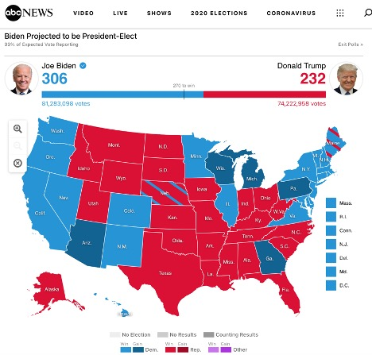
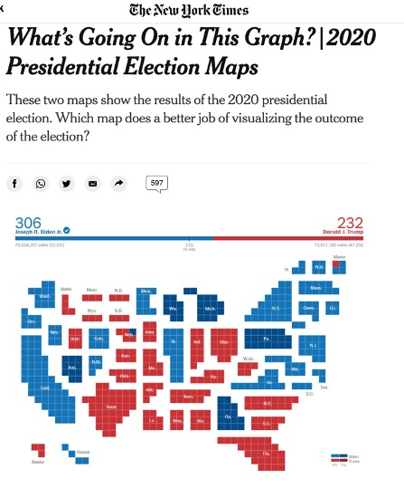

When designing data heavy plots, I like to think in terms of accuracy vs. honesty. A plot can be 100% accurate without being honest and an honest graph must be both accurate and honest. The classic example I think of is the classic US election map.
“Election 2020 Results and Live Updates.” ABC News, December 18, 2020. https://abcnews.go.com/Elections/2020-us-presidential-election-results-live-map/.
At first glance, this map looks as if there is more red than blue and the republican candidate is in the lead. However, most reputable news sources will place this map in context, as in this case where the electoral college totals and total popular vote amounts are displayed at the top of the page.
However, there is still a lot of information lacking in this map, particularly around how individuals voted. Is it true that California received no Republican votes and Texas received no Democratic votes? How come I read about republican congressmen from California in the news? This map is accurate, but if we were to remove the context around it (or think about it in terms of popular support within a state), it would not feel honest.
Choropleth maps of the US often run into the issue of equating land size with population. Showing total COVID-19 cases plotted on a map can lead to an assumption that some areas are less affected than others, though in reality they are just less populated. Showing infection rates can help with that but hides the number of people infected.
“Coronavirus in the U.S.: Latest Map and Case Count.” The New York Times, January 26, 2021. https://www.nytimes.com/interactive/2020/us/coronavirus-us-cases.html.
While I did not find solutions to these problems, I sought to mitigate these issues by looking at the county-level rather than the state level and make an interactive plot with a variety of views to allow the user to explore. This would give me a chance to dive into D3 (my first D3 project) and give me some practice manipulating data on the back end in python. I found that there are advantages to using county data over state data, but most of the problems persist. I detail my process and my findings below.
I pulled data in unemployment data from the Bureau of Labor Statistics, population data from the US Census and election data from the MIT Data Lab. County GeoJson data I got from a Plotly blog.
At first, I sought to do most of the work in python to minimize load time on the front end. I created specialized functions that could take a variety of data sets and integrate them with GeoJson data. However, the further I got into JavaScript the more I realized I could build a more streamlined solution easily in JavaScript with essentially any data source.
In python I ended up doing basic cleaning, prototyping with Plotly choropleth maps, and exporting csv data with a combined county and state FIPS number as the id.
I synched all of this code to GitHub where I would be able to access the raw csv data directly.
As this was my first D3.js project, I relied heavily on the book Interactive Data Visualization for the Web by Scott Murray.
I used the d3.geoAlbersUsa projection (recommended in the book) and found a color scale at colorbrewer2.org.
I then loaded in county GeoJson data from a Plotly tutorial, and my unemployment data from python.
After creating a basic county choropleth map, I relied heavily on a blog by Duy Nguyen. Up until this point I had been creating a customized GeoJson file integrated with unemployment data for each county. I then looped through the array of JS objects to generate the map with the attached data. From this blog I realized I could instead store everything in JS Map objects and call the information I needed using the FIPS id’s and the instant loading magic of hash tables. This saved the speed advantage of combining my data ahead of time but gave me much greater flexibility. From there I created tool tips and had my first map more or less finished.
To create the option of switching to different maps, I moved the critical items to JavaScript state variables and created functions that would handle updating the values of those variables and updating the SVG maps. To trigger these functions, I added “on-click” functions to the buttons. The data for the other maps is loaded in parallel with the first map.
This solution was not particularly elegant and there is JavaScript code that can definitely be more “dry” and optimized for speed. The goal for this project was to explore the concepts and create a workable prototype. In a real environment, these plots would be integrated into an existing website and would likely be built to utilize the tools in that environment. For instance, if I were adding this to a React.js app, we would build the whole think in components in a much cleaner fashion.
If I were to spend more time on this project, there are a few areas of low hanging fruit to improve.
Overall, I found that there are some advantages to mapping county-level, rather than state-level data, but many of the disadvantages persist.
Unemployment data was helped extremely by being at the county, rather than state-level. When looking at broad trends like unemployment, county-level is often the most specific data available and looking at the most specific data you can gives you deeper insights. Starting with “Feb-20” and moving on to each subsequent period paints a picture of how unemployment evolved through the pandemic. Looking at some states like California you can see that the whole state was uniformly affected for several months, likely due to statewide policies, while Texas always had some bright spots and some darker spots. Of course, this is an economic only picture and ignores any relevant public health data.
Population estimate data was less helpful. While obvious in hindsight, I did not anticipate the depth of the disparity between urban and rural counties. Originally, I set the color range to have a low of the county with the smallest population and a high of the highest. However, the resulting map was entirely white with the exception of LA and several other big cities which were the darkest green. Of course, LA county has a population of around 10 million while some of the most remote counties have populations numbered in the low thousands. I resisted a logarithmic scale, which is not intuitive, so the solution I was left with was to move the max value down to 500 thousand.
This more or less destroys the intuitive nature of the plot that I am trying to protect. While adding a legend would add clarity, a perfectly honest solution would successfully communicate the magnitude of the difference between population density. An honest and accurate plot communicates a feeling of the magnitude of the difference in data backed by the power of accuracy.
A better solution is reflected in the example below from the New York Times.
The Learning Network. “What’s Going On in This Graph? | 2020 Presidential Election Maps.” The New York Times, November 19, 2020. https://www.nytimes.com/2020/11/19/learning/whats-going-on-in-this-graph-2020-presidential-election-maps.html.
Here, the state sizes are scaled by the number of electoral votes they have, which is the core data they are trying to communicate. This way each state is communicating two sets of data, the color, indicating the direction they voted, and the size, indicating the number of votes.
I would prefer not having a separate population map to reference. Instead, I would love to scale each county to reflect its population, increasing the size of heavily populated counties and shrinking the size of rural counties. This would be a huge technical and design challenge: calculating the area of each county, determining a scale factor, and determining a new arrangement of scaled counties. Of course, this would result in some counties being thousands of times larger than other counties, which would in itself be difficult to display. This would be a gratifying creative challenge in the future.
My goal for this data was to show how individuals voted in races for president. Most election result maps correctly focus on electoral votes; however, if we are focused on county data we are telling the story of how more narrow regions voted rather than entire states.
At first, I mapped political data by the rate each county voted for the republican or democratic candidate. However, this was not a very honest solution as the number of counties skew Republican, but the population skews Democratic, in the most recent elections.
I ended up mapping total numbers of votes per county. This approach focuses on how individuals in a given area voted, regardless of how their state voted as a whole. The downside is you will need to look at the Republican map, the Democratic map, and the Population map to get any sense of a percentage that voted Democratic, Republican, or not at all.
These downsides notwithstanding, there is a lot we can learn from these maps. A large number of Republicans vote in California and a large number of Democrats vote in Texas. This is a narrative that we often ignore but is very obvious looking at these maps. Moving between periods you also get a very interesting picture of the shift in turnout from election to election.